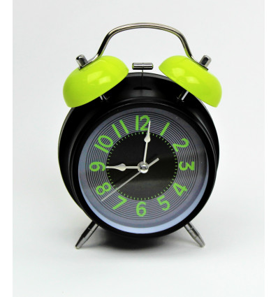

Stalinis laikrodis-žadintuvas (kalbantis) | Biomedikos centras - Klausa Rega Judesys
 Skip to content info@biomedikoscentras.lt 8 700 55 440 El. parduotuvė Dovanų kuponas Apie mus Aktuali informacija DUK Kontaktai
Skip to content info@biomedikoscentras.lt 8 700 55 440 El. parduotuvė Dovanų kuponas Apie mus Aktuali informacija DUK Kontaktai
MEDICININĖS PREKĖS
Klausa Rega Judesys Medicina Odontologija MEDICININĖS PREKĖS 0,00 €Krepšelyje nėra produktų.
Krepšelis
Krepšelyje nėra produktų.
Pradžia / El. parduotuvė / Regos priemonės / Buitiniai prietaisai FiltruotiStalinis laikrodis-žadintuvas (kalbantis)
49,55 €
Stalinis laikrodis-žadintuvas įgarsintas lietuvių ir rusų kalbomis pritaikytas naudoti silpnaregiams ir neregiams.
* Prekės kaina su lengvatiniu 5% PVM tarifu 43,00 € . Įsigyti galite susisiekus.
Daugiau informacijos čia Dėl pridėtinės vertės mokesčio įstatymo lengvatinio 5 proc. PVM tarifo taikymo
SusisiekiteNeturime
Kategorijos: Regos priemonės , Buitiniai prietaisai Aprašymas TECHNINIAI PARAMETRAI KOMPENSAVIMO TVARKALaikrodis įgarsintas vyrišku balsu. Laikrodžio valdymo mygtukai iškilūs, lengvai apčiuopiami. Laikrodis yra kompaktiško dydžio.
Pagrindinės laikrodžio funkcijos:
Laiko ir datos įgarsinimas balsu Žadintuvo funkcija (galimybė pasirinkti melodiją) arba įjungti vibraciją Kasvalandinių pranešimų funkcija Galimybė perjungti įgarsinimo kalbą (Lietuvių arba Rusų kalba) Galimybė nustatyti kalbėjimo garsumą (tyliau arba garsiau) Chronometro funkcija Laikmačio funkcijaPastaba: laikrodis nėra atsparus vandeniui.
Pavyzdys Lietuvių kalba
https://www.biomedikoscentras.lt/wp-content/uploads/2017/09/H11.mp3Pavyzdys Rusų kalba
https://www.biomedikoscentras.lt/wp-content/uploads/2017/09/H11-ru.mp3 AprašymasStalinis Laikrodis su kalbėjimo funkcija Modelio numeris SS/10702 Baterija 2 x AAA Garantija 2 metai
Asmuo turi teisę gauti įsigijimo išlaidų kompensaciją už STALINĮ LAIKRODĮ (kalbanti), jei Jums nustatytas abiejų akių aklumas (geriau matančios akies regėjimo aštrumas su korekcija yra ne daugiau kaip 0,05 arba geriau matančios akies regėjimo akipločio koncentrinis susiaurėjimas iki 10 laipsnių nuo fiksacijos taško).
Įsigijimo išlaidų kompensacijos suteikimo eiga:
Iš gydytojo gaukite medicinos išrašą (forma 027/a), kuriame būtų nurodytas regos likutis pagal pirmiau pateiktas normas. Kreipkitės į teritorinį Techninės pagalbos neįgaliesiems centro (TPNC) padalinį ir pateikite šiuos dokumentus: Prašymą dėl kompensacijos skyrimo (prašymą galima užpildyti TPNC skyriuje); Gydytojo išduotą medicinos išrašą (forma 027/a) Asmens tapatybę patvirtinantį galiojantį dokumentą Pažymą apie deklaruotą gyvenamąją vietą Neįgaliojo pažymėjimą TPNC ne ilgiau kaip per 15 dienų priima sprendimą dėl kompensacijos skyrimo ir Jus apie tai informuoja. Jeigu Jums bus suteikiama kompensacija, tuomet kreipkitės į UAB „BIOMEDIKOS CENTRAS“ dėl kalbančio stalinio laikrodžio įsigijimo:Vilniuje: Antakalnio g. 36C, tel.: 8 700 55 440
Kaune: Vytauto pr. 3-32, tel.: 8 37 209420
Klaipėdoje: J.Janonio g. 10-3, tel.: 8 46 254441
Įsigiję kalbantį stalinį laikrodį, sąskaitą faktūra ir pinigų sumokėjimo patvirtinantį dokumentą, bei dokumentą kuriame nurodomas prekės garantinis terminas pristatykite į TPNC ir Jums į nurodytą banko sąskaitą bus grąžinta 70 procentų sumokėtos sumos, bet ne daugiau kaip 30 Eur.Kategorijos
Klausa Rega Judesys Medicina OdontologijaInformacija
El. parduotuvė Pirkimo taisyklės Pristatymo informacija DUK Apie mus Aktuali informacija KontaktaiKontaktai
El. paštas: info@biomedikoscentras.ltTel.: 8 700 55 440 © 2020 UAB „Biomedikos centras“
Klausa Rega Judesys Medicina Odontologija Prisijungti El. parduotuvė Dovanų kuponas Apie mus Aktuali informacija DUK Kontaktai
Prisijungti
Registruotis
